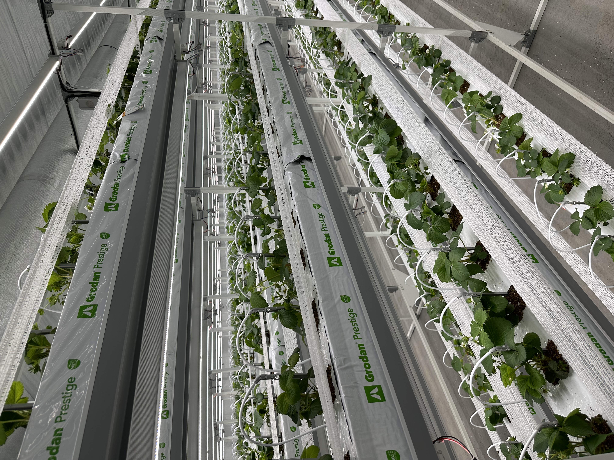
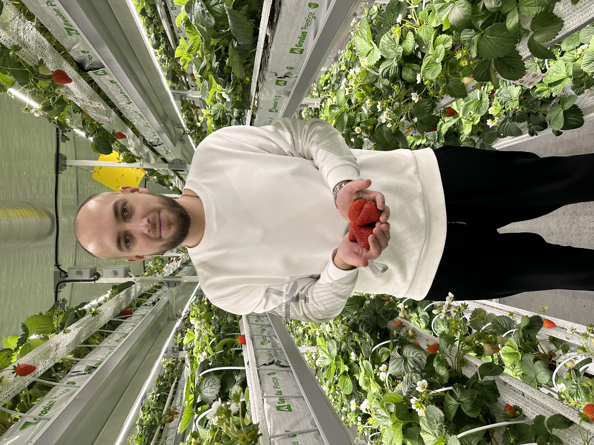
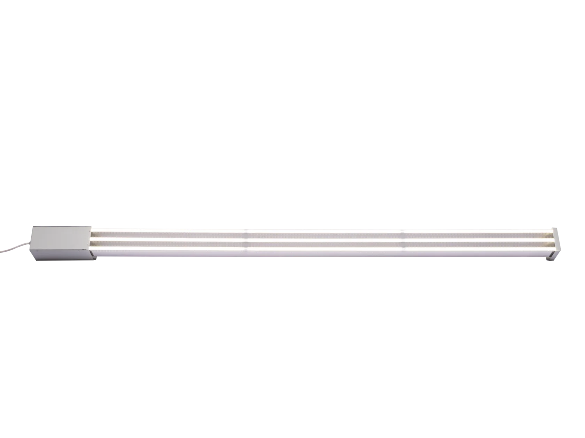
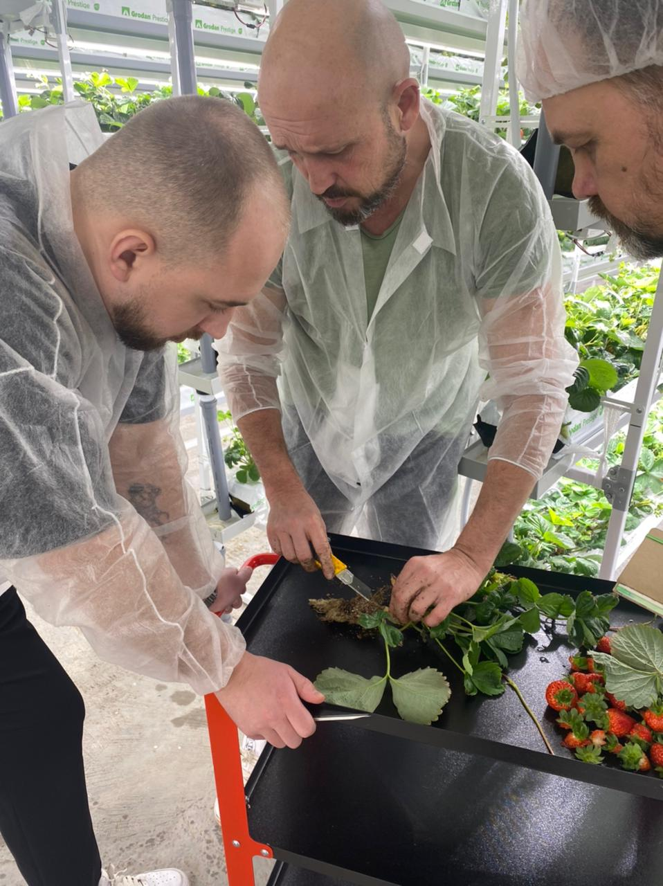
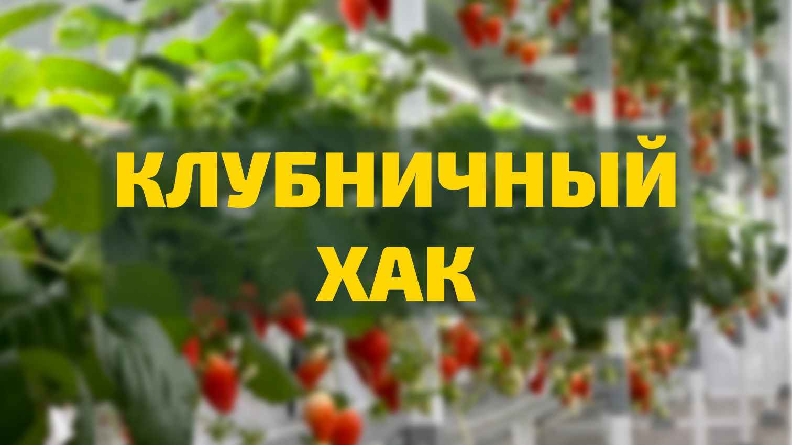

масштаб, помещение, ярусы, рабочие ограничения
Klubnika Project / ферма под расчет
Клубничная ферма: расчет, комплектация и запуск
Я помогаю пройти путь от идеи до рабочей системы: посчитать площадь и бюджет, подобрать свет, стеллажи, полив и понять, что понадобится до первого урожая.
Если идея уже зацепила
Сначала проверяем вводные, потом собираем ферму
Если вы уже смотрели видео про клубничные фермы и хотите понять, реально ли запустить свою, начните с вводных: площадь, помещение, бюджет, цель и готовность заниматься технологией.
01
Посчитать площадь и бюджет
получить первый ориентир по масштабу, комплекту и следующему шагу
02
Разобрать ферму как систему
свет, стеллажи, полив, питание, климат и агрономия работают вместе
03
Посмотреть практику
фото, видео, ягода, ошибки запуска и реальные узлы системы
04
Обсудить объект
если уже есть помещение, ограничения или вопрос по комплектации

Видео как proof-система
Практика, которую можно посмотреть до расчета
Собрал видео по темам, которые помогают проверить проект до заявки: как выглядит ферма, какие ошибки встречаются, как устроены свет, полив и питание, и с каких цифр начинать расчет.

Смотреть
YouTube / Ilya Patiev
Открыть канал и выбрать видео по ферме, ягоде, свету, поливу и ошибкам запуска.
растения, урожай, качество и видимый продукт
что стоит проверить до покупки оборудования
узлы системы, которые влияют на результат

Материалы из практики
Опираемся на реальные фото, видео и расчетные сценарии
В проекте накоплены материалы по фермам, ягоде, свету, поливу и посадкам. Когда нет публичной экономики объекта, показываем расчетный сценарий и явно подписываем вводные.
Сначала расчет
Проверьте ферму на цифрах до закупки
Введите базовые вводные и получите предварительный состав системы: площадь, стеллажи, свет, полив, бюджетную рамку и следующий шаг.
Рассчитать ферму
Предварительный результат
рамка для разговора, а не обещание окупаемости
свет, стеллажи, полив, питание и базовая комплектация
ориентир по ярусам, посадкам и полезной площади
что нужно уточнить до покупки оборудования
считать глубже, обсудить объект или подобрать комплект
Ферма как система
Ферма работает только как связка решений
До закупки важно согласовать всю цепочку: площадь, ярусы, свет, полив, питание, климат и протокол выращивания. Ошибка в одном узле меняет требования ко всем остальным.

Что связываем до закупки
площадь -> ярусы -> свет -> климат -> полив -> питание -> протокол
Считаем, сколько посадок реально обслуживать, какие проходы нужны и где появятся узкие места.
LED влияет не только на фотосинтез, но и на тепловую нагрузку, влажность и вентиляцию.
Подача, раствор, EC/pH и дренаж должны совпадать с субстратом и фазой растения.
Сорт, посадка и стадии развития задают режимы, контрольные точки и работу после запуска.
Сценарии запуска
Три входа в проект
Для нового объекта логичнее идти через расчет фермы. Если проект уже есть, можно начать с пилота или конкретного узла системы.

Главный сценарий
Коммерческая ферма
Для тех, кто хочет считать объект как бизнес: площадь, ярусы, растения, свет, полив и запуск.
Рассчитать ферму
Проверка технологии
Пилотный модуль
Для первых циклов, обучения команды и проверки вводных перед большим объектом.
Обсудить вводные
Компоненты
Досветка и узлы
Для теплиц и действующих проектов, где нужно подобрать LED, полив или стеллажи.
Открыть каталогПроцесс запуска
Как идея превращается в ферму
Запуск начинается не с покупки оборудования, а с вводных: площадь, цель, помещение, бюджет и готовность заниматься агрономией. После этого считаем систему и собираем проект по шагам.

До закупки
вводные -> расчет -> система -> объект -> запуск
Вводные и цель
фиксируем формат фермы, культуру, масштаб и ожидания
от клиента: помещение, цель, бюджетная рамкаПредварительный расчет
считаем площадь, ярусы, растения и базовую систему
результат: первая рамка проектаСистема фермы
связываем стеллажи, свет, полив, питание и климат
результат: состав комплектаПроверка помещения
смотрим электричество, воду, вентиляцию и ограничения
от клиента: реальные вводные объектаКомплектация и поставка
уточняем узлы, очередность, монтажную логику и сроки
результат: понятный список решенийПосадка и сопровождение
запускаем протокол, питание, полив и контрольные точки
результат: ферма входит в рабочий циклЧестно до старта
Что проверить до закупки
Клубничная ферма - не пассивный доход и не покупка одной лампы. Перед стартом важно проверить помещение, бюджет, электричество, воду, климат и готовность заниматься технологией выращивания.
Проверить вводныеКаталог компонентов
Ключевые узлы фермы
На главной оставляем только базовые категории. Полный каталог лучше смотреть после расчета или если нужен конкретный узел для действующего проекта.



После комплектации
Оборудование - только часть запуска
После расчета и комплектации начинаются посадка, питание, наблюдение, корректировки и первые ошибки. Здесь важны понятный разбор вводных, протокол запуска и связь по ходу первого цикла.
Новый продукт
Клубничный Хак
Практический курс по выращиванию клубники в контролируемой среде. Он нужен тем, кто хочет сначала собрать системную базу: растение, свет, климат, полив, питание, качество ягоды и логику запуска.

не проектная смета
а системная база по технологии клубничной фермы
Материалы и маршруты
Если нужно изучить подробнее
Оставляем только маршруты, которые помогают подготовиться к расчету или разговору об объекте.

Следующий шаг
Готовы обсудить ферму?
Опишите вводные: площадь или помещение, цель проекта, примерный бюджет и что уже понятно по оборудованию. Если вводных пока нет, начните с расчета - так разговор будет точнее.